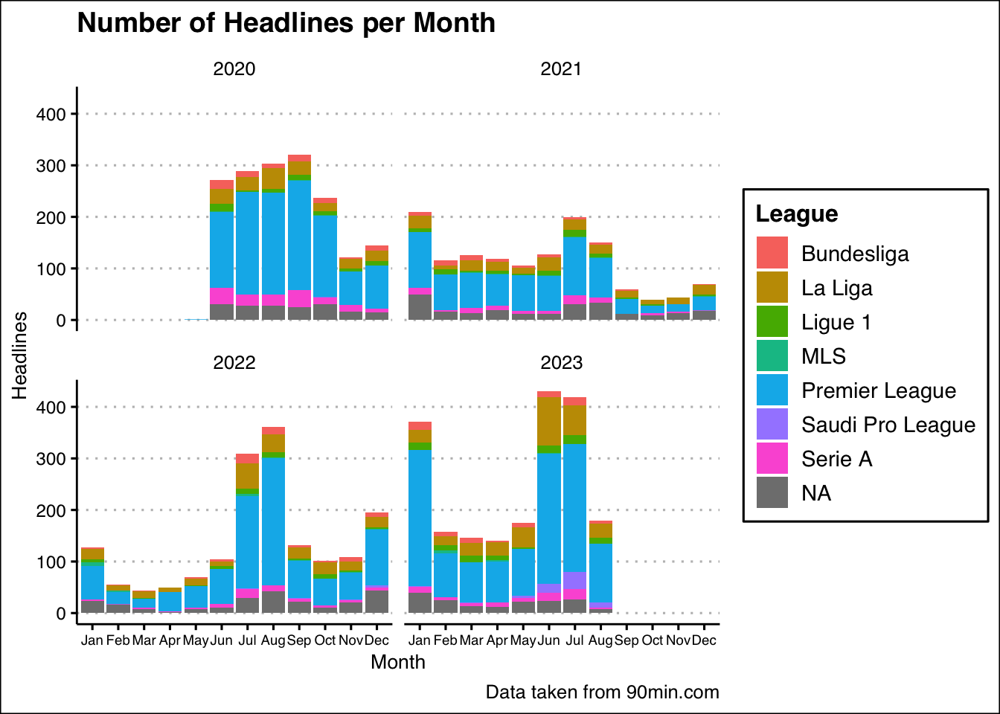
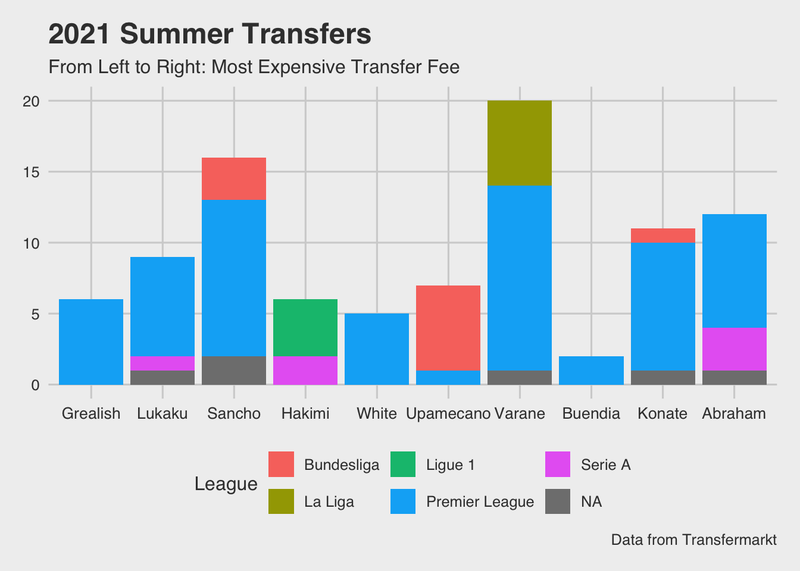
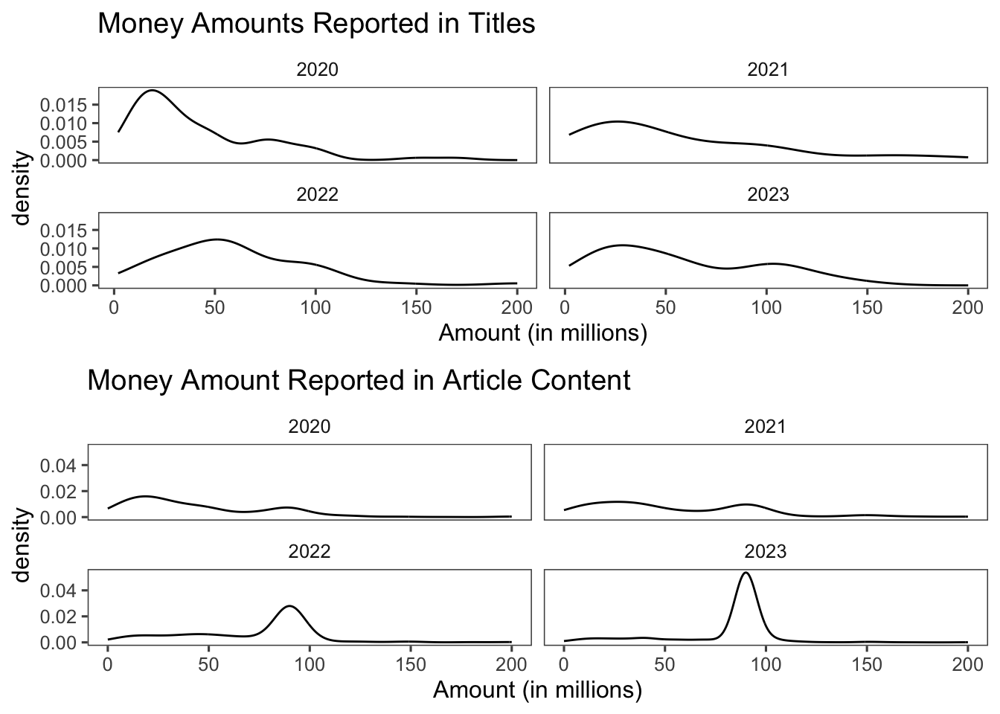

── Attaching core tidyverse packages ──────────────────────── tidyverse 2.0.0 ──
✔ dplyr 1.1.4 ✔ readr 2.1.5
✔ forcats 1.0.0 ✔ stringr 1.5.1
✔ ggplot2 3.5.0 ✔ tibble 3.2.1
✔ lubridate 1.9.3 ✔ tidyr 1.3.1
✔ purrr 1.0.2
── Conflicts ────────────────────────────────────────── tidyverse_conflicts() ──
✖ dplyr::filter() masks stats::filter()
✖ dplyr::lag() masks stats::lag()
ℹ Use the conflicted package (<http://conflicted.r-lib.org/>) to force all conflicts to become errors
Attaching package: 'gridExtra'
The following object is masked from 'package:dplyr':
combineAnalyzing Media Coverage of Soccer Transfer Rumors
Rows: 6726 Columns: 4
── Column specification ────────────────────────────────────────────────────────
Delimiter: ","
chr (4): title, date, link, content
ℹ Use `spec()` to retrieve the full column specification for this data.
ℹ Specify the column types or set `show_col_types = FALSE` to quiet this message.Introduction
For European soccer fans, the summer months can be agonizing as the club season stops in favor of international tournaments and much needed breaks for players coming off of a grueling 10-month season. Yet, even as matches stop, business doesn’t. In June, July, and August, the soccer world becomes one big auction house, as clubs look to strength their squads and certain players, both enthusiastically and unenthusiastically, look for new teams to play for. With interest over the next star signing a club can make, news publications have mastered how to report transfers. A mixture of fact and often fiction, daily reports about potential player signings and departures feed fans in need of soccer-related content. But how are transfers and transfer rumors reported on? Using all transfer-related articles from 90min.com, a global soccer news outlet with newsrooms in four continents, from May 2020 to August 2023, I will analyze trends in transfer reporting, from what leagues are reported on most to common phrases you can expect to see beginning a headline.
Dataset Additions
The original data set, taken from Kaggle, includes 4 columns: the title, publishing date, link to the article, and contents of the article. However, to add layers of specificity to the data, I have added a few variables to this data set using mutate and stringr functions. Along with singling out both the date and month, I have also add a variable called “club” which denotes the first club listed in the article headline. Important to note is that I have added each club from Europe’s “Top 5 Leagues”, along with a few American and Saudi Arabian clubs who have had prominent transfer involvement, such as Inter Miami’s acquisition of Lionel Messi and Al Nassr’s acquisition of Cristiano Ronaldo. I also grouped together individual clubs into their domestic league, meaning we have the English Premier League, La Liga (Spain), Serie A (Italy), Bundesliga (Germany), Ligue 1 (France), MLS (USA/Canada), and Saudi Pro League (Saudi Arabia).
transfer_headlines <- transfer_headlines |>
mutate(month = str_extract(date, "[A-Za-z]{3}"),
year = str_extract(date, "\\d{4}"),
club = str_extract(title, "Arsenal|Aston Villa|Bournemouth|Brentford|Brighton|Burnley|Chelsea|Crystal Palace|Everton|Fulham|Liverpool|Luton Town|Man(chester)* City|Man(chester)* U(ni)*t(e)*d|Newcastle|Nottingham Forest|Sheffield United|Tottenham|West Ham|Wolves|Leeds|Leicester|Southampton|Watford|Alaves|Almeria|Athletic Bilbao|Atletico Madrid|Barcelona|Real Betis|Cadiz|Celta Vigo|Getafe|Girona|Granada|Las Palmas|Mallorca|Osasuna|Rayo Vallecano|Real Madrid|Real Sociedad|Sevilla|Valencia|Villarreal|Bayern Munich|Borussia Dortmund|RB Leipzig|Union Berlin|Freiburg|Bayer Leverkusen|Eintracht Frankfurt|Wolfsburg|Mainz|Borussia Monchengladbach|Koln|Hoffenheim|Werder Bremen|Bochum|Augsburg|Stuttgart|Darmstadt|Heidenheim|AC Milan|Atalanta|Bologna|Cagliari|Empoli|Fiorentina|Genoa|Frosinone|Hellas Verona|Inter Milan|Inter |Juventus|Lazio|Leece|Monza|Napoli|Roma|Salernitana|Sassuolo|Torino|Udinese|Brest|Clermont|Le Havre|Lens|Lille|Lorient|Lyon|Marseille|Metz|Monaco|Montpellier|Nantes|Nice|Paris Saint-Germain|PSG|Reims|Rennes|Strasbourg|Toulouse|Al Nassr|Al Hilal|Al Ettifaq|Al Ahli|Saudi Arabia|Saudi Pro League|Inter Miami|LA Galaxy|MLS"),
league = case_match(club, c("Arsenal", "Aston Villa","Bournemouth", "Brentford", "Brighton", "Burnley", "Chelsea", "Crystal Palace", "Everton", "Fulham", "Liverpool", "Luton Town", "Man City", "Man Utd", "Newcastle", "Nottingham Forest", "Sheffield United", "Tottenham", "West Ham", "Wolves", "Leeds", "Leicester", "Southampton", "Watford", "Manchester United", "Manchester City") ~ "Premier League",
c("Alaves", "Almeria", "Athletic Bilbao", "Atletico Madrid", "Barcelona", "Real Betis", "Cadiz", "Celta Vigo", "Getafe", "Girona", "Granada", "Las Palmas", "Mallorca", "Osasuna", "Rayo Vallecano", "Real Madrid", "Real Sociedad", "Sevilla", "Valencia", "Villarreal") ~ "La Liga",
c("Bayern Munich", "Borussia Dortmund", "RB Leipzig", "Union Berlin", "Freiburg", "Bayer Leverkusen", "Eintracht Frankfurt", "Wolfsburg", "Mainz", "Borussia Monchengladbach", "Koln", "Hoffenheim", "Werder Bremen", "Bochum", "Augsburg", "Stuttgart", "Darmstadt", "Heidenheim") ~ "Bundesliga",
c("AC Milan", "Atalanta", "Bologna", "Cagliari", "Empoli", "Fiorentina", "Genoa", "Frosinone", "Hellas Verona", "Inter ", "Juventus", "Lazio", "Leece", "Monza", "Napoli", "Roma", "Salernitana", "Sassuolo", "Torino", "Udinese") ~ "Serie A",
c("Brest", "Clermont", "Le Havre", "Lens", "Lille", "Lorient", "Lyon", "Marseille", "Metz", "Monaco", "Montpellier", "Nantes", "Nice", "Paris Saint-Germain", "PSG", "Reims", "Rennes", "Strasbourg", "Toulouse") ~ "Ligue 1",
c("Al Nassr", "Al Hilal", "Al Ettifaq", "Al Ahli", "Saudi Arabia", "Saudi Pro League") ~ "Saudi Pro League",
c("Inter Miami", "LA Galaxy", "MLS") ~ "MLS")) Headlines by Month
As we progress through this project, it’s important to have a good sense of the amount of headlines 90min.com published per month and also per year. In addition to the plot being faceted by year, I have also included a breakdown of what league(s) receive the most transfer coverage.

We can see a few trends from this plot. First, there is a clear spike in articles in January, June, July, and August. As these are the only months when clubs can buy players, it makes sense that 90min would publish more as there is simply more content available and more fan buzz to cater to. The exception to this is 2020. After COVID-19 forced the world to come to a halt, European soccer was forced to rearrange its schedule for both its current and upcoming season. With a later starting date for the 2020/21 season, the transfer window was subsequently altered, which explains the spike in articles in August, September, and October. COVID-19’s impact can also be seen in 2021, as that was the year with the fewest headlines by a decent margin. But as the world returned to somewhat normalcy, so did 90min’s reporting of transfers. We see this in the fact that the year with the most articles was 2023.
How many headlines did the 10 Most Expensive Transfers Generate?
Naturally, the biggest, most expensive transfers generate the most buzz; fans of the buying club are anxious to see if their shiny new toy will fall into their hands, fans of the selling club are hoping to avoid a hard goodbye, and fans of other clubs enjoy watching the chaos unfold from a distance. But, does the higher the transfer fee always correlate to more articles? To do this, I have extracted the 10 players with the highest transfer fees, according to Transfermarkt. Similar to the previous plot, I also give a breakdown of what league is first to appear in the article to see if league bias is a factor in reporting.
transfer_headlines |>
mutate(player = str_extract(title, "Caicedo|Rice|Bellingham|Kane|Neymar|Gvardiol|Havertz|Kolo Muani|Hojlund|Szoboszlai")) |>
filter(year == 2023) |>
filter(!is.na(player)) |>
ggplot(aes(x = player, fill = league)) +
geom_bar() +
scale_x_discrete(limits = c("Caicedo", "Rice", "Bellingham", "Kane", "Neymar","Gvardiol", "Havertz","Kolo Muani", "Hojlund", "Szoboszlai")) +
labs(title = "2023 Summer Transfers", subtitle = "From Left to Right: Most Expensive Transfer Fee", x = "Player", y = "Number of Headlines", fill = "League", caption = "Data from Transfermarkt") +
theme_fivethirtyeight() +
theme(axis.text.x=element_text(size=10))

Right away, it is striking how many headlines the top transfers in 2023 had in comparison to the other three years. This follows a previously mentioned trend, but it is still interesting to see in a different context. As for the overall trends, it’s evident that a higher transfer fee does not directly correlate to more article headlines. While, yes, players with large transfers often have large amount of headlines, there’s much greater variability, suggesting there are other factors at play. An important factor may be how long a “transfer saga” lasts for. If multiple clubs are financially competing for the same player, news outlets have a gold mines: more eyeballs are on the transfer and competition between clubs often leads to a prolonged transfer saga. For instance, while Jack Grealish’s 2021 transfer fee was significantly higher than Raphael Varane’s, but the drama surrounding Varane’s move to Manchester United was far greater than Grealish’s to Manchester City, offering a possible explanation as to why Varane had more than 3x Grealish’s headlines. We see the influence of the English Premier League in this set of graphics. First, as the most supported league worldwide, it makes sense for the Premier League to be mentioned the most as its articles will generate more clicks. Further, as 90min is an English-speaking website, it’s natural to write more about the English league. Further, while not the purpose of this project, we also see that a majority of transfers involve Premier League clubs, an indication of the power and money the league has.
Let’s Talk Money
One of the eye-catching parts of a transfer headline can be the sum of money listed. With teams sometimes bidding upwards of £100 million, there’s great interest among fans in seeing the astronomical sums thrown around in the transfer market. I have created a new dataset called “money” which adds 4 variables to the existing transfer_headlines dataset: whether or not a monetary amount was mentioned in the title, whether or not a monetary amount was mentioned in the article contents, the amount mentioned in the title, and the amount mentioned in the article.
money <- transfer_headlines |>
mutate(includes_money_title = str_detect(title, "£|‚¬"),
includes_money_title = ifelse(str_detect(title, "£|‚¬"), "yes", "no"),
includes_money_con = str_detect(content,"£|‚¬"),
includes_money_con = ifelse(str_detect(content, "£|‚¬"), "yes", "no"),
money_amount_title = str_extract(title, "\\d*\\.?\\d[m]"),
money_amount_title = parse_number(money_amount_title),
money_amount_con = str_extract(content, "\\d*\\.?\\d[m]"),
money_amount_con = parse_number(money_amount_con)) How is Money Mentioned?
no yes Sum
no 2670 3819 6489
yes 11 226 237
Sum 2681 4045 6726As seen by the table, only a small fraction of headlines, 237/6726, include money amounts, while of the 6726 articles, 4045 have money amounts in their contents. This makes sense, as transfer amounts are important parts of a story, explaining the larger proportion of contents that contain money. However, as the size of the transfer fee can be attention grabbing, is it surprising that so few headlines include money? Perhaps; however, publications use money, in particular larger sums, selectively in a way to emphasize the significance of a transfer. To investigate this, I have created two density plots to see the frequency of money amounts that appear in headlines and article contents.

On first glance, we see that the article content has more consistent money reporting. However, headlines are seemingly more likely to report greater sums of money. This makes sense because, as said before, transfer fees can be attention grabbers in headlines. In 2022 and 2023 there’s a clear indication that figures between £75m and £100m had a greater usage in article content. This can be due to a lot of factors, but the increasingly large transfer fees demanded by clubs provides a possible explanation. Also, with many clubs in better financial shape following the COVID-19 Pandemic, 2022 and 2023 may have seen an increase in clubs able to pay larger sums.
Reports by Club
In the first part of this project, we’ve already seen a clear indications that the most reported on league is the English Premier League. However, we can use an interactive tree map to see not only the amount of headlines for each league, we can also see the amount of headlines by club and by year. Along with being able to click on year and league, hovering over a box will provide the number of headlines in that category.
club_rumors <- transfer_headlines |>
filter(!is.na(club)) |>
group_by(club, league, year) |>
summarize(num_rumors = n())`summarise()` has grouped output by 'club', 'league'. You can override using
the `.groups` argument.d3tree2(
treemap(club_rumors,
index = c("year", "league", "club"),
vSize = c("num_rumors"),
vColor = "league"),
rootname = "Transfer Rumors by Club")From the treemap, it’s evident that, no matter the year, the Premier League is by far the most reported on league; La Liga is consistently the second most popular league, mainly due to the fact that FC Barcelona and Real Madrid may be the two most supported clubs in the world, but is still well behind the Premier League. An interesting aspect of this treemap is that it portrays how the reporting of certain clubs differ season to season. For instance, Juventus had the largest share of headlines in Serie A from 2020-2022, but Inter Milan (Inter) were the most reported on Italian this previous summer. This is also evidenced when analyzing the “Big 6” teams in the Premier League (Liverpool, Arsenal, Manchester City, Manchester United, Chelsea, and Tottenham). Without fail, the distribution of transfer headlines differs with each year. A variety of factors influence this, such as a club’s activity in the transfer window or their involvement in a high-profile transfer saga.
Sentence Starters
Of the 6700+ headlines, a majority include a club in the first few words of the headline. This makes sense, but what about article headlines that don’t explicitly mention a club or player? In the final part of this project, I have filtered out observations with a club listed in the “club” variable. With the remaining observations, the variable “first_words” denotes that first two words of the headlines to see what trends appear.
| Phrase | Occurences |
|---|---|
| Transfer rumours: | 28 |
| Premier League | 24 |
| Mikel Arteta | 16 |
| Potential destinations | 13 |
| Jurgen Klopp | 11 |
| Erik ten | 10 |
| Ole Gunnar | 9 |
| Pep Guardiola | 9 |
| Who is | 9 |
| Who should | 9 |
| Frank Lampard | 8 |
| Thomas Tuchel | 8 |
| Cristiano Ronaldo | 6 |
| Every Premier | 6 |
| The 10 | 6 |
| Things to | 6 |
| Antonio Conte | 5 |
| Carlo Ancelotti | 5 |
| Declan Rice | 5 |
| Joan Laporta | 5 |
| Jose Mourinho | 5 |
| Sporting CP | 5 |
| The most | 5 |
Of the 20 most common word combinations, a majority involve either Premier League managers, such as Pep Guardiola and Mikel Arteta, or evident article series that 90min does, including “Transfer Rumors:” and “Potential Destinations”. For managers, the average reader of 90min will almost certainly be aware of what club the mentioned manager is in charge of, allowing the author the luxury of omitting the club name from the headline. A few other starters of note include players, Declan Rice and Cristiano Ronaldo, the Premier League (which is not extracted using a string function), and Sporting CP, a Portuguese Club that I did not account for in my initial data manipulation.
Conclusion
This project has covered many aspects of the transfer reporting process. From how the most expensive transfers are reported on to common sentence starters, we can understand how complicated transfer market reporting is. There are lots of takeaways, but one of particular interest is just how popular the Premier League. With the most fans and most money, the rumors will continue to flow as England’s best clubs continue to compete to sign the world’s elite. With this, perhaps we can expect many of these graphics to be even more dominated by the Premier League in years to come.